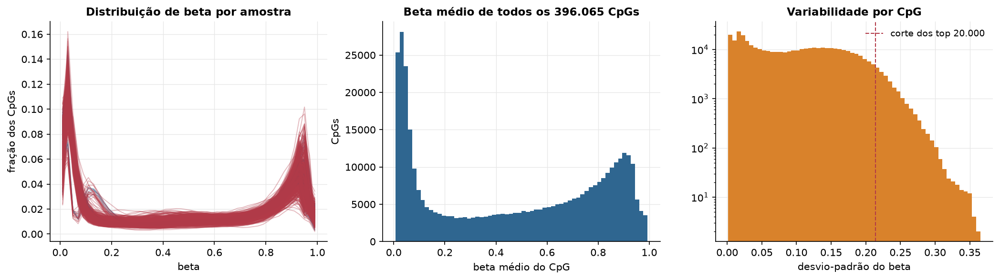
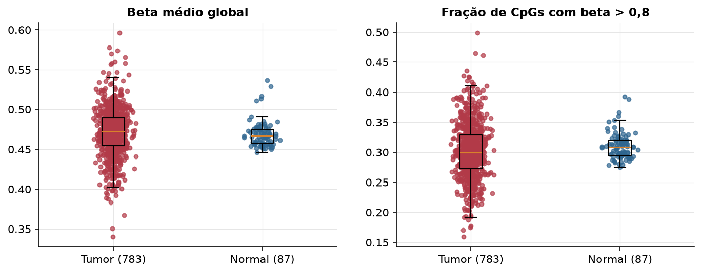
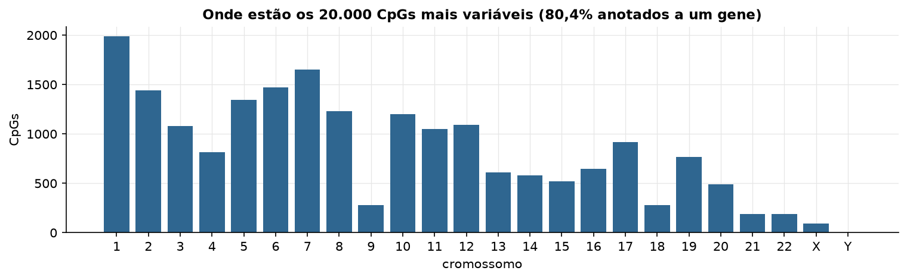
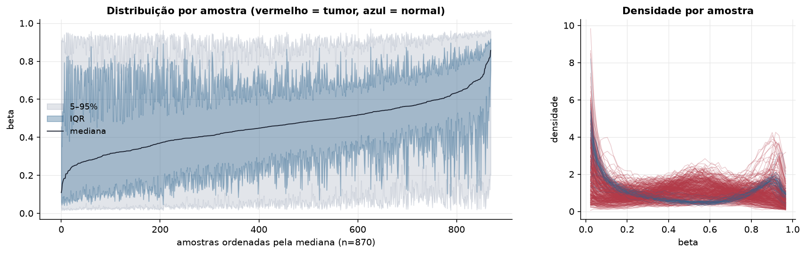
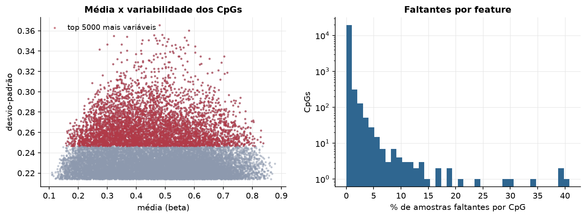
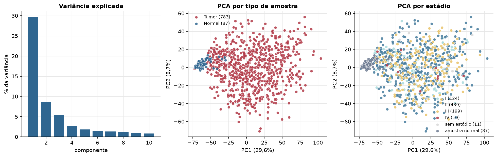
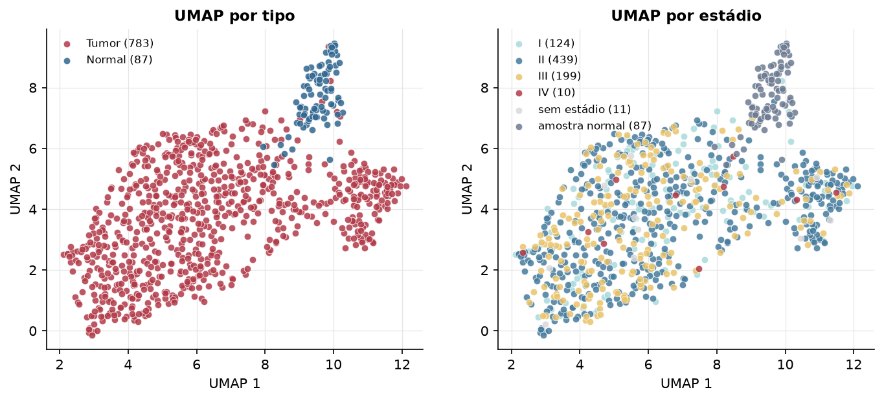
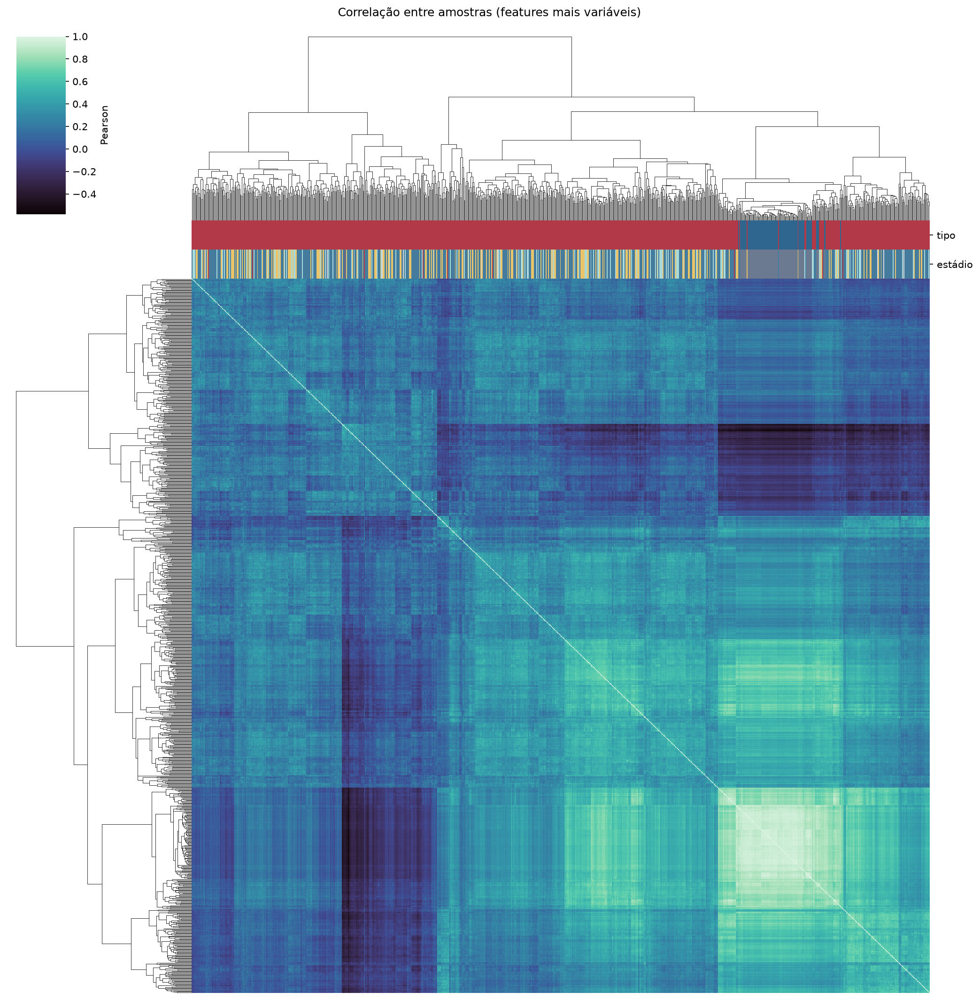
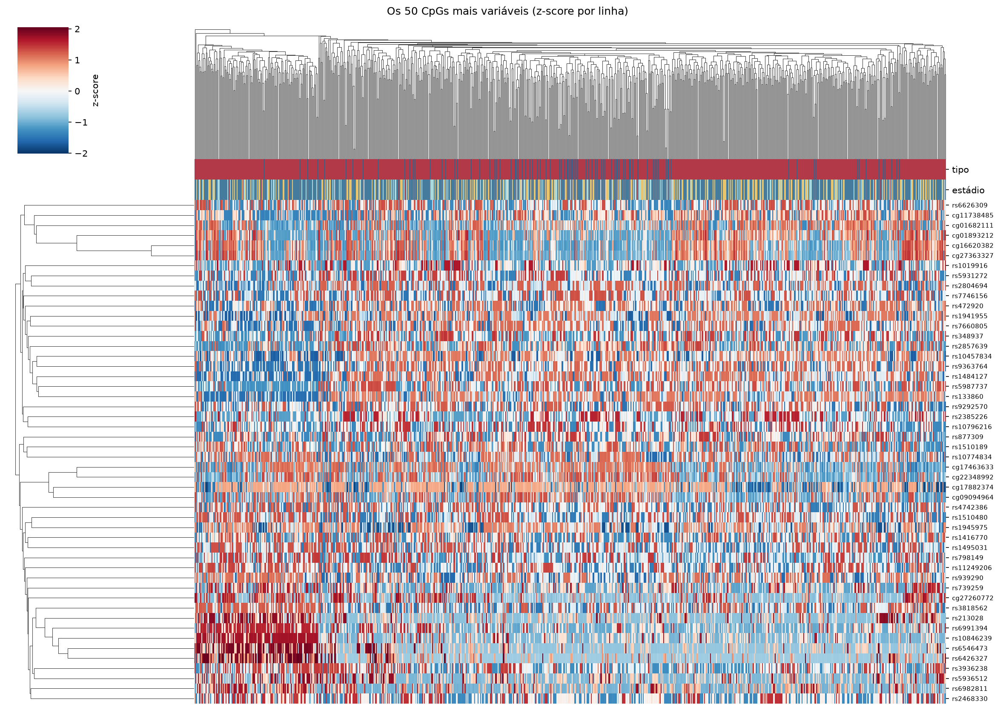
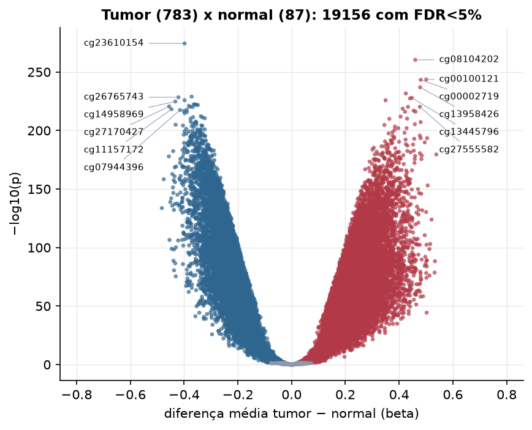

BRCA · Metilação do DNA (450k)
Illumina Infinium HumanMethylation450, valores beta (0 a 1) · gerado em 21/10/2026 19:37
396.065CpGs medidos
364.012CpGs sem faltante
20.000CpGs
783amostras tumorais
87amostras normais
0,1%valores faltantes
Fonte: PanCanAtlas HM450 via API do Xena
O array tem ~485 mil CpGs. Para não ocupar espaço, guardamos estatísticas de todos os CpGs e só os 20.000 mais variáveis para PCA, UMAP e heatmaps.
Principais resultados
- A distribuição de beta é bimodal: a maioria dos CpGs está quase toda desmetilada (perto de 0, típico de ilhas CpG em promotores) ou quase toda metilada (perto de 1, corpo gênico e regiões intergênicas). 40,4% dos CpGs têm beta médio intermediário (0,2 a 0,8).
- Beta médio global: 0,473 nos tumores e 0,467 nos normais (sem hipometilação global no tumor).
- 20.000 CpGs medidos em 870 amostras (783 tumorais e 87 normais); 0,1% dos valores estão faltando.
- Os dois primeiros componentes principais explicam 29,6% e 8,7% da variância das features mais variáveis.
- Correlação mediana entre amostras: 0,24.
- Tumor x normal: 19156 CpGs diferentes com FDR < 5% (11856 maiores no tumor, 7300 maiores no normal; 81 pacientes têm o par tumor-normal).
- Mais aumentados no tumor: cg08104202, cg00100121, cg00002719, cg13958426, cg16640855, cg13445796, cg10940462, cg16887264.
- Mais reduzidos no tumor: cg23610154, cg27527345, cg26765743, cg07568233, cg14958969, cg20643945, cg13676706, cg18613344.
- Associações clínicas com p < 0,05 nos componentes principais: PC1 com estádio (p=0.02); PC3 com estádio (p=6.9e-05); PC1 com sexo (p=0.024); PC1 com idade (p=7.2e-09); PC3 com sobrevida (p=0.02).
Distribuição global



Exploração dos CpGs mais variáveis
Distribuição dos valores


Estrutura das amostras




Tumor x normal

Features mais diferentes entre tumor e normal
| diferenca_tumor_menos_normal | t | p | fdr | |
|---|---|---|---|---|
| cg23610154 | -0.398 | -53.562 | 3.92e-275 | 7.85e-271 |
| cg08104202 | 0.46 | 51.234 | 4.05e-261 | 4.05e-257 |
| cg00100121 | 0.501 | 47.674 | 2.33e-244 | 1.55e-240 |
| cg00002719 | 0.48 | 47.612 | 4.73e-244 | 2.36e-240 |
| cg13958426 | 0.478 | 48.037 | 1.18e-237 | 4.71e-234 |
| cg16640855 | 0.425 | 46.622 | 2.37e-232 | 7.89e-229 |
| cg27527345 | -0.372 | -45.268 | 1.08e-229 | 3.08e-226 |
| cg26765743 | -0.421 | -47.17 | 4.11e-229 | 1.03e-225 |
| cg13445796 | 0.448 | 45.108 | 1.32e-228 | 2.93e-225 |
| cg10940462 | 0.44 | 44.853 | 3.62e-228 | 7.25e-225 |
| cg07568233 | -0.398 | -45.558 | 1.28e-226 | 2.32e-223 |
| cg16887264 | 0.35 | 44.947 | 1.46e-226 | 2.44e-223 |
| cg14958969 | -0.433 | -45.089 | 1.8e-225 | 2.77e-222 |
| cg20643945 | -0.36 | -44.435 | 4.32e-223 | 6.17e-220 |
| cg13676706 | -0.364 | -44.198 | 5.06e-223 | 6.75e-220 |
| cg18613344 | -0.354 | -44.098 | 1.27e-222 | 1.59e-219 |
| cg09847584 | -0.349 | -44.935 | 1.59e-222 | 1.87e-219 |
| cg24554839 | -0.382 | -44.174 | 7.62e-222 | 8.47e-219 |
| cg27170427 | -0.456 | -50.289 | 2.8e-221 | 2.95e-218 |
| cg27555582 | 0.477 | 44.097 | 5.48e-221 | 5.48e-218 |
| cg21146652 | -0.377 | -44.522 | 6.2e-221 | 5.77e-218 |
| cg01016662 | 0.433 | 44.742 | 6.35e-221 | 5.77e-218 |
| cg08180884 | -0.368 | -44.958 | 7.37e-221 | 6.41e-218 |
| cg13096208 | 0.413 | 43.809 | 2.23e-219 | 1.86e-216 |
| cg11157172 | -0.447 | -44.201 | 6.22e-219 | 4.98e-216 |
| cg19378892 | -0.39 | -44.732 | 1.65e-218 | 1.27e-215 |
| cg07944396 | -0.415 | -45.856 | 3.43e-218 | 2.54e-215 |
| cg21306240 | 0.454 | 44.678 | 1.15e-217 | 8.18e-215 |
| cg09149672 | -0.401 | -43.202 | 1.98e-217 | 1.37e-214 |
| cg14416371 | 0.461 | 42.931 | 7.62e-217 | 5.08e-214 |
Associação com variáveis clínicas
p-valores da associação dos três primeiros componentes principais (só tumores) com estádio (Kruskal-Wallis), sexo (Mann-Whitney), idade (Spearman) e sobrevida global (Cox univariado).
| estádio (Kruskal) | sexo (Mann-Whitney) | idade (Spearman) | sobrevida OS (Cox) | |
|---|---|---|---|---|
| PC1 (24,5%) | 0.02 | 0.024 | 7.15e-09 | 0.342 |
| PC2 (9,7%) | 0.653 | 0.694 | 0.644 | 0.082 |
| PC3 (5,3%) | 6.86e-05 | 0.85 | 0.309 | 0.02 |